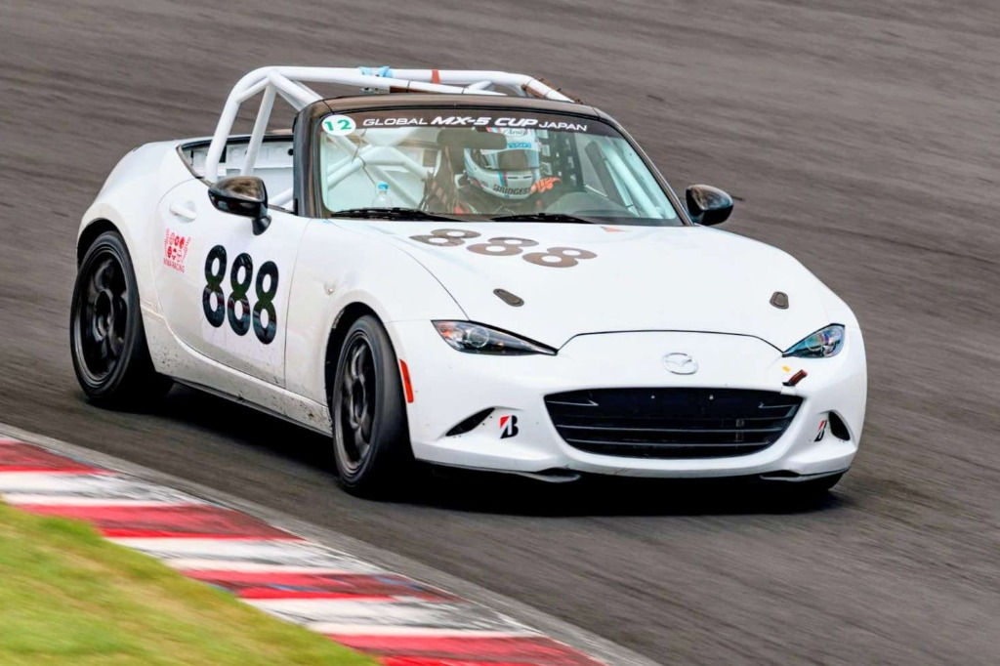
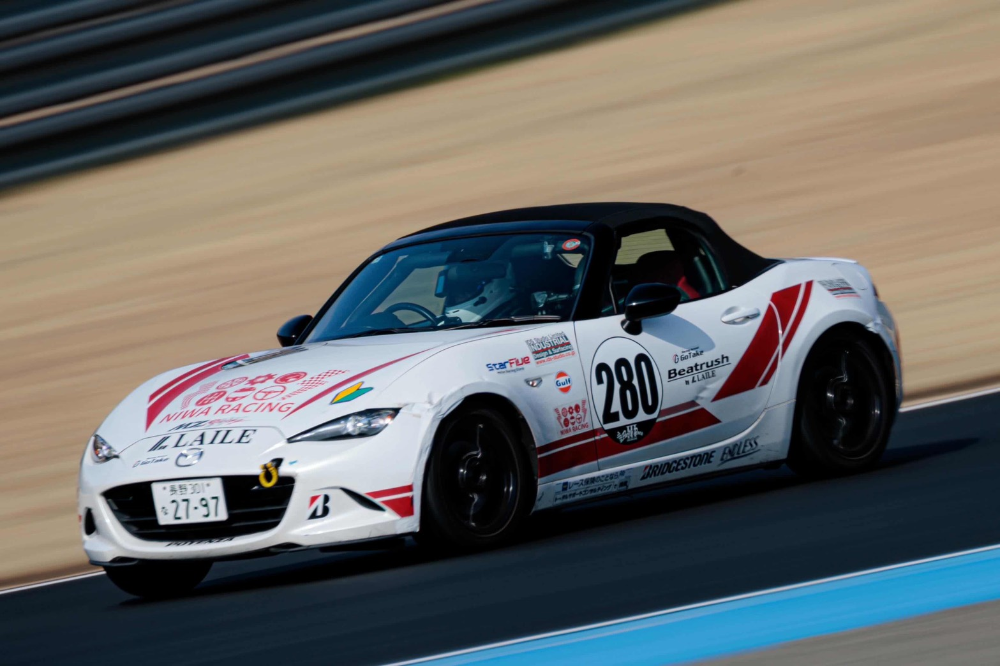
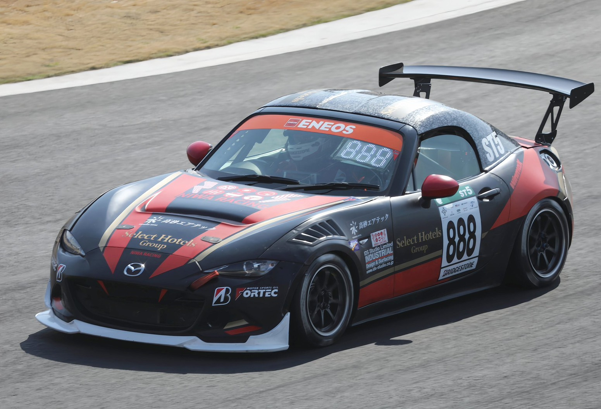
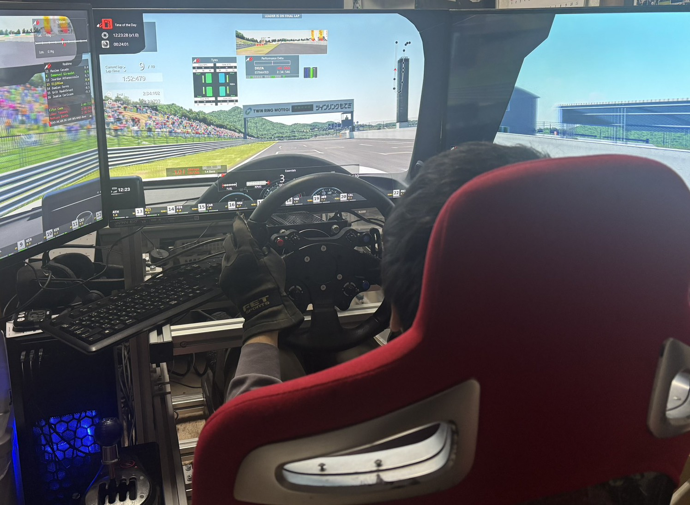
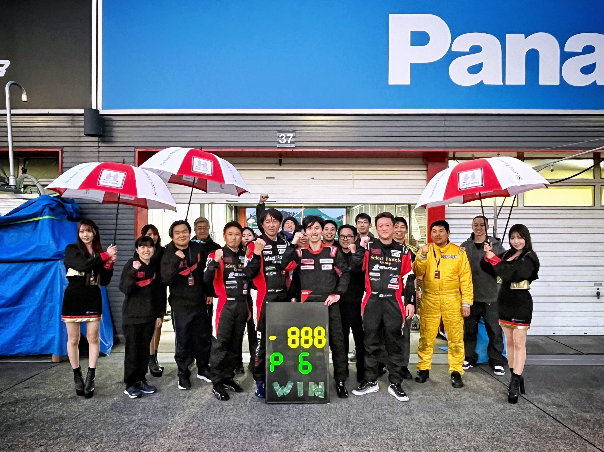

NIWA RACINGには、段階を踏んで実車レースの頂点を目指す「ステップアップ・ピラミッド」と、仲間と集まって腕を磨き合う「シミュレーター・コミュニティ」があります。はじめてのサーキットから国内最高峰の耐久レースまで、あなたのペースで挑戦できます。
3つのステージそれぞれに明確な役割があります。土台から一段ずつ、着実にステップアップできる環境を整えています。

STEP 01マツダファン・エンデュランス
初心者大歓迎の参加型耐久レース。走行会やマツ耐に仲間と一緒にエントリーし、サーキットでの安全な走り方や混走時のマナー、ピット作業や燃費計算といった耐久レースの基本を楽しみながら身につけます。

STEP 02JAF公認 ワンメイクスプリント
全車が同じ仕様のNR-Aで走る、完全イコールコンディションのスプリントレース。予選のアタックラップやバトル中の駆け引きなど、ドライバー自身の腕と判断力を徹底的に鍛えます。

STEP 03 · GOALチームのフラッグシップ目標
24時間レースを含む長距離戦で、プロドライバーと競い合う国内最高峰の耐久レース。チームの精鋭ドライバーとしてシートをつかみ、トップレベルのスピードとプレッシャーにチーム一丸で挑みます。
「もっと速くなりたい」「きれいなラインで走りたい」。NIWA RACINGのシミュレーターは、大勢の仲間が集まり、笑い合いながらお互いを高め合うコミュニティです。


シミュレーターを楽しむメンバーが多数在籍。週末にはボイスチャットをつないで笑い合いながら走るなど、年齢や実車経験の有無を問わず、モータースポーツ好きが集まれる温かい雰囲気があります。
ストイックに世界一を目指す場ではなく、「純粋に上手くなりたい」という想いを共有する場です。走行ラインやテレメトリを見比べて「ここはもう少しブレーキを残せるよ」とアドバイスし合い、全員でタイムアップを喜び合います。
レーザー計測による精密な物理挙動を持つ「iRacing」での緻密な走り込みから、誰でも親しみやすく白熱したバトルを楽しめる「グランツーリスモ」まで。それぞれの環境やスタイルに合わせて自由に参加できます。
クラッシュによる金銭的・身体的リスクがないシミュレーターだからこそ、限界を超えたタイヤの滑りや急激な荷重移動を何度でも試せます。仲間と深めたドライビング理論は、そのまま「マツ耐」「パーティレース」、そして「S耐」のシートでの自信とスピードにつながります。
サーキット走行数十回分のコーナー練習を手軽に。
スピンやオーバーテイクの感覚をノーリスクで体に覚え込ませる。
走行ラインやブレーキングポイントを可視化して仲間と共有。
1人で悩まず、仲間とタイムアップを喜び合える。
シミュレーターで仲間と走りたい方も、マツ耐からレースを始めてみたい方も大歓迎です。まずはお気軽にお問い合わせいただくか、ガレージへ遊びに来てください。